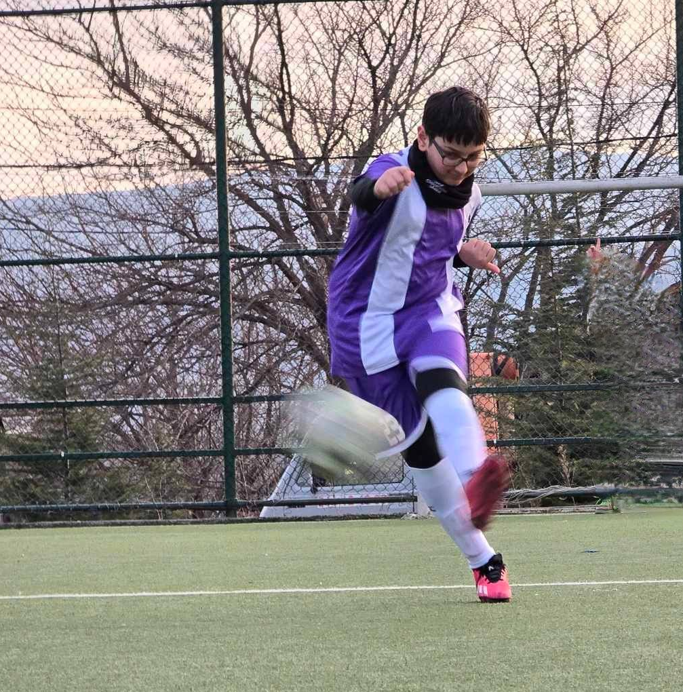

Hello my name is Demetre Khosroshvili. I am 14 years old, live in Georgia, Tbilisi and learn at the 118th public school.
I have a lot of hobbies like playing football, videogames and programming, in this portfolio i will tell you about each of them.
I have like football for about 2-3 years. At first, i didnt like it, then when i started to understand it i only played with the kids in the streets, but after i wanted to join a team. My first team didnt even have a name, can you imagine?😂
The coach was bad and i was training with kids that were 6-9 years old... I left and joined FC Elite because my friends invited me. I liked the team and the kids. We later change our name to GF(Georgian Football) but shortly after we got a new coach and everything changed. We got new kits, new training equipment, changed our name to FC Avchala, and the best of all, we started winning our matches.
This is me at practice:
I have played video games since i was a kid. I played every genre of games on every type of platform. My favourites were especially action shooters like Call of Duty, racing like Forza Horizon 5 and a loooot more.
I dont think i will have time to play games as much as before i started programming, but i think learning programming is better than playing video games.
It all started when my grandma signed me up at GOA(Goal-Oriented Academy) to learn programming. She didnt even tell me but i approved her decision and started learning. Im currently learning Python and Web-development.
By the end of the course i will know: Python, HTML, CSS and JavaScript. If i want i can continue to learn deeper with the 2.5 year course that GOA offers after you finish the 10 month course.
GOA is the academy of chads and virgins are not allowed. The mentors and group leaders are amazing and can help you with anything.